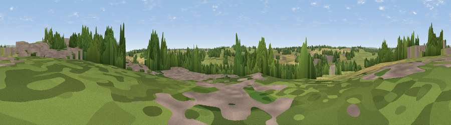

Viewpoint near Bramshall
#43464 in England · top 93% of its area beats it · near Bramshall · path 248 mWhere it is
The exact computed spot (SK 06075 33175). Click the marker for map links.
Public access: the nearest public right of way is about 248 m away — the final stretch may cross private land. Computed from Natural England's CRoW access layer and OpenStreetMap rights of way — not the legal definitive map. Always verify locally.
The view, rendered

A 360° render of this exact spot computed from the terrain model, tree cover and land cover — summer colours, afternoon light, calibrated against photographs of famous viewpoints. Real trees, hedges and buildings will differ in detail.
The panorama
Grey silhouette: terrain skyline in each direction (720 bearings, Earth curvature and refraction included). Dashed green: skyline with trees (+15 m) and buildings (+8 m) as obstacles. Blue strip: how far the ground is visible on each bearing.
Where the view opens
Wedge length = distance to the farthest visible ground on that bearing (vegetation-aware). Rings at 10, 25 and 50 km.
What fills the view
50% grassland · 24% cropland · 20% woodland · 6% built-up
Angular shares of the visible panorama (visual magnitude), not map area. Landscape diversity 0.51 (0–1 Shannon).
Key numbers
More beautiful places nearby
The staircase of upgrades: each row has a higher view potential than everything closer. Driving times are estimates from straight-line distance, calibrated against real road routing — check an actual route before setting out.
| Place | Direction | Drive | Score |
|---|---|---|---|
| Viewpoint near Hollington | N · 5 km | ~11 min | 45.8 |
| Viewpoint near Hollington | N · 6 km | ~12 min | 53.8 |
| Viewpoint near Cheadle | NNW · 10 km | ~19 min | 61.0 |
| Viewpoint near Oakamoor | N · 12 km | ~22 min | 62.9 |
| Viewpoint near Wootton | NNE · 14 km | ~25 min | 74.4 |
| Viewpoint near Wootton | NNE · 14 km | ~25 min | 74.8 |
| Tissington Hill | NNE · 21 km | ~36 min | 75.5 |
| Viewpoint near Mow Cop | NW · 32 km | ~49 min | 80.2 |
52.89599, -1.91114 · source: screening · position refined by local search. Computed location — check access rights before visiting.